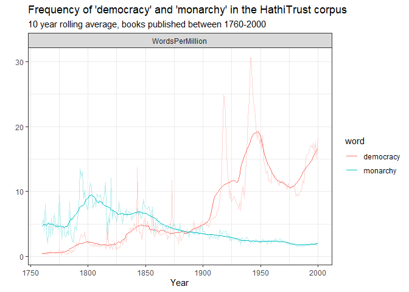

This package allows you to interact with various free data resources made available by the Hathi Trust digital library, including the Hathi Trust Bookworm, a tool similar to the Google ngram viewer and the Hathi Trust Workset Builder 2.0. You can also download and process the Hathi Trust Extracted Features files on which the Bookworm viewer is based. The Hathi Trust collection contains over 17 million digitised books, including many of those originally digitised by Google for its Google Books project.
Installation
This package is not yet on CRAN. Install from GitHub as follows:
remotes::install("xmarquez/hathiTools")Downloading word frequencies
The simplest task to use the package for is to download word frequencies from the Hathi Trust Bookworm:
library(hathiTools)
library(tidyverse)
#> -- Attaching packages --------------------------------------- tidyverse 1.3.1 --
#> v ggplot2 3.3.5 v purrr 0.3.4
#> v tibble 3.1.4 v dplyr 1.0.7
#> v tidyr 1.1.3 v stringr 1.4.0
#> v readr 2.0.1 v forcats 0.5.1
#> -- Conflicts ------------------------------------------ tidyverse_conflicts() --
#> x dplyr::filter() masks stats::filter()
#> x dplyr::lag() masks stats::lag()
result <- query_bookworm(word = c("democracy", "monarchy"), lims = c(1760, 2000), counttype = c("WordsPerMillion", "TextPercent"))
#> No encoding supplied: defaulting to UTF-8.
result
#> # A tibble: 482 x 4
#> date_year democracy monarchy counttype
#> <int> <dbl> <dbl> <chr>
#> 1 1760 0.382 5.50 WordsPerMillion
#> 2 1760 2.50 10.3 TextPercent
#> 3 1761 0.300 6.32 WordsPerMillion
#> 4 1761 2.13 11.8 TextPercent
#> 5 1762 0.352 4.94 WordsPerMillion
#> 6 1762 2.00 8.95 TextPercent
#> 7 1763 0.488 9.32 WordsPerMillion
#> 8 1763 1.94 13.9 TextPercent
#> 9 1764 0.663 4.37 WordsPerMillion
#> 10 1764 2.37 6.87 TextPercent
#> # ... with 472 more rows
result %>%
pivot_longer(democracy:monarchy, names_to = "word") %>%
group_by(word, counttype) %>%
mutate(rolling_avg = slider::slide_dbl(value, mean, .before = 10, .after = 10)) %>%
ggplot(aes(x = date_year, color = word)) +
geom_line(aes(y = value), alpha = 0.3) +
geom_line(aes(x = date_year, y = rolling_avg)) +
facet_wrap(~counttype) +
labs(x = "Year", y = "", subtitle = "10 year rolling average, books published between 1760-2000",
title = "Frequency of 'democracy' and 'monarchy' in the HathiTrust corpus") +
theme_bw()
It is also possible to do more complex queries, for example to look at the relative frequency of a term across book classifications from the Library of Congress system:
result2 <- query_bookworm(word = "democracy", groups = c("date_year", "class"),
lims = c(1900,2000))
#> No encoding supplied: defaulting to UTF-8.
result2
#> # A tibble: 2,121 x 4
#> date_year word class WordsPerMillion
#> <int> <chr> <chr> <dbl>
#> 1 1900 democracy N/A 4.03
#> 2 1900 democracy Agriculture 0.769
#> 3 1900 democracy Education 9.56
#> 4 1900 democracy World History And History Of Europe, Asi~ 5.50
#> 5 1900 democracy History Of The Americas 15.7
#> 6 1900 democracy Fine Arts 0.816
#> 7 1900 democracy Science 0.146
#> 8 1900 democracy General Works 14.6
#> 9 1900 democracy Military Science 0.962
#> 10 1900 democracy Geography. Anthropology. Recreation 0.691
#> # ... with 2,111 more rows
result2 %>%
ggplot(aes(x = date_year, y = fct_reorder(str_trunc(class, 40), WordsPerMillion))) +
geom_tile(aes(fill = WordsPerMillion)) +
facet_wrap(~word) +
scale_fill_gradient2() +
theme_bw() +
labs(y = "", x = "Year", title = "Frequency of 'democracy' \nacross library of congress classifications",
fill = "Words per million") +
theme(legend.position = "bottom")
Or across literary forms:
result3 <- query_bookworm(word = "democracy", groups = c("date_year", "literary_form"),
lims = c(1900,2000))
#> No encoding supplied: defaulting to UTF-8.
result3 %>%
ggplot(aes(x = date_year, y = fct_reorder(str_trunc(literary_form, 40), WordsPerMillion))) +
geom_tile(aes(fill = WordsPerMillion)) +
facet_wrap(~word) +
scale_fill_gradient2() +
theme_bw() +
labs(y = "", x = "Year", title = "Frequency of 'democracy' \nacross literary forms",
fill = "Words per million") +
theme(legend.position = "bottom")
It is also possible to further limit the query to, e.g., books published in a particular language. For example, this gives the number of English-language texts that use the word “democracy” per year from 1760-2000.
result4 <- query_bookworm(word = c("democracy"), lims = c(1760, 2000), counttype = c("TotalTexts"), language = "English")
#> No encoding supplied: defaulting to UTF-8.
result4
#> # A tibble: 241 x 3
#> date_year democracy counttype
#> <int> <int> <chr>
#> 1 1760 388 TotalTexts
#> 2 1761 393 TotalTexts
#> 3 1762 319 TotalTexts
#> 4 1763 443 TotalTexts
#> 5 1764 320 TotalTexts
#> 6 1765 352 TotalTexts
#> 7 1766 439 TotalTexts
#> 8 1767 402 TotalTexts
#> 9 1768 480 TotalTexts
#> 10 1769 424 TotalTexts
#> # ... with 231 more rowsOne can use method = "returnPossibleFields" to return the fields available for grouping:
result5 <- query_bookworm(word = "", method = "returnPossibleFields")
#> No encoding supplied: defaulting to UTF-8.
result5
#> # A tibble: 21 x 6
#> name tablename dbname type anchor description
#> <chr> <chr> <chr> <chr> <chr> <chr>
#> 1 language languageLookup langu~ char~ bookid ""
#> 2 publication_country publication_countryLookup publi~ char~ bookid ""
#> 3 publication_state publication_stateLookup publi~ char~ bookid ""
#> 4 subclass subclassLookup subcl~ char~ bookid ""
#> 5 narrow_class narrow_classLookup narro~ char~ bookid ""
#> 6 class classLookup class char~ bookid ""
#> 7 resource_type resource_typeLookup resou~ char~ bookid ""
#> 8 target_audience target_audienceLookup targe~ char~ bookid ""
#> 9 scanner scannerLookup scann~ char~ bookid ""
#> 10 first_author_birth first_author_birthLookup first~ char~ bookid ""
#> # ... with 11 more rowsWe can also get a sample of the book titles and links for a particular year. For example, suppose we’re interested in why so many books in the category “Education” mention the word “democracy” in 1941, as appears in the second graph above. This query pulls the first 100 books in the catalog for 1941 in the category “education”:
result2 %>% filter(class == "Education", WordsPerMillion == max(WordsPerMillion))
#> # A tibble: 1 x 4
#> date_year word class WordsPerMillion
#> <int> <chr> <chr> <dbl>
#> 1 1941 democracy Education 242.
result6 <- query_bookworm(word = "democracy", groups = "date_year",
date_year = "1941", class = "Education", method = "search_results")
#> No encoding supplied: defaulting to UTF-8.
result6
#> # A tibble: 100 x 3
#> htid title url
#> <chr> <chr> <chr>
#> 1 nc01.ark:/13960/t2v41mn4r Teaching democracy in the ~ https://babel.hathitru~
#> 2 uc1.$b67929 The education of free men ~ https://babel.hathitru~
#> 3 mdp.39015062763720 The education of free men ~ https://babel.hathitru~
#> 4 mdp.39015068297905 The education of free men ~ https://babel.hathitru~
#> 5 uc1.$b67873 Pennsylvania bill of right~ https://babel.hathitru~
#> 6 mdp.39015035886111 Education in a world of fe~ https://babel.hathitru~
#> 7 mdp.39015031665543 Education and the morale o~ https://babel.hathitru~
#> 8 uc1.$b67928 Education and the morale o~ https://babel.hathitru~
#> 9 uiug.30112108068831 Proceedings of the convent~ https://babel.hathitru~
#> 10 uc1.b4305220 Guidance in democratic liv~ https://babel.hathitru~
#> # ... with 90 more rowsWe can download the Extracted Features file associated with any of these HathiTrust IDs:
tmp <- tempdir()
result6$htid[2] %>%
download_hathi_ef(dir = tmp)
#> # A tibble: 18,763 x 6
#> htid token POS count section page
#> <chr> <chr> <chr> <dbl> <chr> <dbl>
#> 1 uc1.$b67929 COMMISSION NNP 1 body 1
#> 2 uc1.$b67929 N35 CD 1 body 1
#> 3 uc1.$b67929 in IN 1 body 1
#> 4 uc1.$b67929 uc-male JJ 1 body 1
#> 5 uc1.$b67929 * SYM 1 body 1
#> 6 uc1.$b67929 . . 1 body 1
#> 7 uc1.$b67929 Free NNP 1 body 1
#> 8 uc1.$b67929 Men NNP 1 body 1
#> 9 uc1.$b67929 Democracy NNP 1 body 1
#> 10 uc1.$b67929 School NNP 1 body 1
#> # ... with 18,753 more rows
extracted_features <- get_hathi_counts(result6$htid[2], dir = tmp)
#> Rows: 18763 Columns: 5
#> -- Column specification --------------------------------------------------------
#> Delimiter: ","
#> chr (3): token, POS, section
#> dbl (2): count, page
#>
#> i Use `spec()` to retrieve the full column specification for this data.
#> i Specify the column types or set `show_col_types = FALSE` to quiet this message.
extracted_features
#> # A tibble: 18,763 x 6
#> htid token POS count section page
#> <chr> <chr> <chr> <dbl> <chr> <dbl>
#> 1 uc1.$b67929 COMMISSION NNP 1 body 1
#> 2 uc1.$b67929 N35 CD 1 body 1
#> 3 uc1.$b67929 in IN 1 body 1
#> 4 uc1.$b67929 uc-male JJ 1 body 1
#> 5 uc1.$b67929 * SYM 1 body 1
#> 6 uc1.$b67929 . . 1 body 1
#> 7 uc1.$b67929 Free NNP 1 body 1
#> 8 uc1.$b67929 Men NNP 1 body 1
#> 9 uc1.$b67929 Democracy NNP 1 body 1
#> 10 uc1.$b67929 School NNP 1 body 1
#> # ... with 18,753 more rowsAnd we can extract the metadata:
meta <- get_hathi_meta(result6$htid[2], dir = tmp)
meta
#> # A tibble: 35 x 3
#> field value htid
#> <chr> <chr> <chr>
#> 1 schemaVersion https://schemas.hathitrust.org/EF_Schema_MetadataSub~ uc1.$b67~
#> 2 id http://hdl.handle.net/2027/uc1.$b67929 uc1.$b67~
#> 3 type DataFeedItem uc1.$b67~
#> 4 type Book uc1.$b67~
#> 5 dateCreated 20200209 uc1.$b67~
#> 6 title The education of free men in American democracy. uc1.$b67~
#> 7 contributor http://www.viaf.org/viaf/144709713 uc1.$b67~
#> 8 contributor http://id.loc.gov/ontologies/bibframe/Organization uc1.$b67~
#> 9 contributor Educational Policies Commission. uc1.$b67~
#> 10 contributor http://www.viaf.org/viaf/136691592 uc1.$b67~
#> # ... with 25 more rowsWe can also get the metadata for all of these books at the same time:
meta <- get_workset_meta(result6$htid, metadata_dir = tmp)
#> Warning in get_workset_meta(result6$htid, metadata_dir = tmp): This function
#> works best with worksets generated by workset_builder. I cannot determine if
#> this file was generated by workset_builder; results may not be accurate or fail.
#> Getting download key...
#> Downloading metadata for 100 volumes. This might take some time.
#> Rows: 100 Columns: 36
#> -- Column specification --------------------------------------------------------
#> Delimiter: ","
#> chr (31): htBibUrl, volumeIdentifier, rightsAttributes, title, genre, pubPl...
#> dbl (3): schemaVersion, pubDate, hathitrustRecordNumber
#> dttm (2): dateCreated, lastUpdateDate
#>
#> i Use `spec()` to retrieve the full column specification for this data.
#> i Specify the column types or set `show_col_types = FALSE` to quiet this message.
meta
#> # A tibble: 100 x 36
#> htBibUrl schemaVersion volumeIdentifier rightsAttributes title genre pubDate
#> <chr> <dbl> <chr> <chr> <chr> <chr> <dbl>
#> 1 http://c~ 1.3 nc01.ark:/13960~ und Teac~ "[\"~ 1941
#> 2 http://c~ 1.3 uc1.$b67929 pd The ~ "[\"~ 1941
#> 3 http://c~ 1.3 mdp.39015062763~ pd The ~ "[\"~ 1941
#> 4 http://c~ 1.3 mdp.39015068297~ pd The ~ "[\"~ 1941
#> 5 http://c~ 1.3 uc1.$b67873 pd Penn~ "[\"~ 1941
#> 6 http://c~ 1.3 mdp.39015035886~ ic Educ~ "[\"~ 1941
#> 7 http://c~ 1.3 mdp.39015031665~ pd Educ~ "[\"~ 1941
#> 8 http://c~ 1.3 uc1.$b67928 pd Educ~ "[\"~ 1941
#> 9 http://c~ 1.3 uiug.3011210806~ ic Proc~ "[\"~ 1941
#> 10 http://c~ 1.3 uc1.b4305220 ic Guid~ "[\"~ 1941
#> # ... with 90 more rows, and 29 more variables: pubPlace <chr>,
#> # typeOfResource <chr>, bibliographicFormat <chr>, language <chr>,
#> # dateCreated <dttm>, lastUpdateDate <dttm>, imprint <chr>, isbn <chr>,
#> # issn <chr>, oclc <chr>, lccn <chr>, classification <chr>, handleUrl <chr>,
#> # hathitrustRecordNumber <dbl>, sourceInstitutionRecordNumber <chr>,
#> # sourceInstitution <chr>, accessProfile <chr>, enumerationChronology <chr>,
#> # governmentDocument <chr>, names <chr>, issuance <chr>, ...One can get info about the corpus itself by using counttype = "TotalWords" or counttype = "TotalTexts" and omitting the word key.
result7 <- query_bookworm(counttype = c("TotalTexts"), groups = c("date_year", "language"),
lims = c(1500,2000))
#> No encoding supplied: defaulting to UTF-8.
result7 %>%
summarise(TotalTexts = sum(TotalTexts))
#> # A tibble: 1 x 1
#> TotalTexts
#> <int>
#> 1 12534182
library(ggrepel)
result7 %>%
mutate(language = fct_lump_n(language, 10, w = TotalTexts)) %>%
group_by(date_year, language) %>%
summarise(TotalTexts = sum(TotalTexts)) %>%
group_by(language) %>%
mutate(label = ifelse(date_year == max(date_year), as.character(language), NA_character_)) %>%
group_by(language) %>%
mutate(rolling_avg = slider::slide_dbl(TotalTexts, mean, .before = 10, .after = 10)) %>%
ggplot() +
geom_line(aes(x = date_year, y = rolling_avg, color = language), show.legend = FALSE) +
geom_line(aes(x = date_year, y = TotalTexts, color = language), show.legend = FALSE, alpha = 0.3) +
geom_text_repel(aes(x = date_year, y = TotalTexts, label = label, color = language), show.legend = FALSE) +
scale_y_log10() +
theme_bw() +
labs(title = "Total texts per language in the HathiTrust bookworm", subtitle = "Log scale. Less common languages grouped as 'other'. 10 year rolling average.", x = "Year", y = "")
#> `summarise()` has grouped output by 'date_year'. You can override using the `.groups` argument.Note that the accessible Hathi Trust Bookworm database is the 2016 version. A more current version of the database exists (with some 17 million digitized texts), but is not publicly accessible yet, I think.
It is also possible to build a workset of Hathi Trust IDs for further analysis. Here, for example, we find all the volumes that contain the term “democracy” and have genre strings that include “dictionary” and “biography”.
result8 <- workset_builder(token = "democracy", genre = c("dictionary", "biography"))
result8
#> # A tibble: 1,129 x 2
#> htid n
#> <chr> <int>
#> 1 aeu.ark:/13960/t39030j16 3
#> 2 aeu.ark:/13960/t9z040f1s 1
#> 3 chi.090377798 25
#> 4 chi.097697911 2
#> 5 chi.098306000 1
#> 6 chi.23017470 2
#> 7 chi.73090523 3
#> 8 coo.31924022643799 1
#> 9 coo.31924081662029 1
#> 10 coo.31924086013368 1
#> # ... with 1,119 more rowsHere’s the metadata for the first six of these results.
meta <- get_workset_meta(head(result8), metadata_dir = tmp)
#> Getting download key...
#> Downloading metadata for 6 volumes. This might take some time.
#> Rows: 6 Columns: 36
#> -- Column specification --------------------------------------------------------
#> Delimiter: ","
#> chr (30): htBibUrl, volumeIdentifier, rightsAttributes, title, genre, pubPl...
#> dbl (4): schemaVersion, pubDate, hathitrustRecordNumber, sourceInstitution...
#> dttm (2): dateCreated, lastUpdateDate
#>
#> i Use `spec()` to retrieve the full column specification for this data.
#> i Specify the column types or set `show_col_types = FALSE` to quiet this message.
meta
#> # A tibble: 6 x 36
#> htBibUrl schemaVersion volumeIdentifier rightsAttributes title genre pubDate
#> <chr> <dbl> <chr> <chr> <chr> <chr> <dbl>
#> 1 http://c~ 1.3 aeu.ark:/13960/t~ pd An A~ "[\"~ 1832
#> 2 http://c~ 1.3 aeu.ark:/13960/t~ pd An A~ "[\"~ 1809
#> 3 http://c~ 1.3 chi.090377798 pd Univ~ "[\"~ 1885
#> 4 http://c~ 1.3 chi.097697911 pd The ~ "[\"~ 1880
#> 5 http://c~ 1.3 chi.098306000 pd Live~ "[\"~ 1814
#> 6 http://c~ 1.3 chi.23017470 pd The ~ "[\"~ 1880
#> # ... with 29 more variables: pubPlace <chr>, typeOfResource <chr>,
#> # bibliographicFormat <chr>, language <chr>, dateCreated <dttm>,
#> # lastUpdateDate <dttm>, imprint <chr>, isbn <chr>, issn <chr>, oclc <chr>,
#> # lccn <chr>, classification <chr>, handleUrl <chr>,
#> # hathitrustRecordNumber <dbl>, sourceInstitutionRecordNumber <dbl>,
#> # sourceInstitution <chr>, accessProfile <chr>, enumerationChronology <chr>,
#> # governmentDocument <chr>, names <chr>, issuance <chr>, ...One can also turn the workset into a list of htids for downloading via rsync:
tmp <- tempfile()
htid_to_rsync(result8$htid, tmp)
#> Use rsync -av --files-from C:\Users\marquexa\AppData\Local\Temp\RtmpU9KGqk\file5d443336f6c data.analytics.hathitrust.org::features-2020.03/ hathi-ef/ to download EF files to hathi-ef directoryThere’s a convenience function that will attempt to do this for you in one command.
rsync_from_hathi(head(result8$htid))(This requires having rsync installed; see the vignette on using worksets in this website).
It is also possible to download the big “hathifile” to get basic metadata for ALL of the texts in the Hathi Trust digital library; this is useful for selecting random samples.